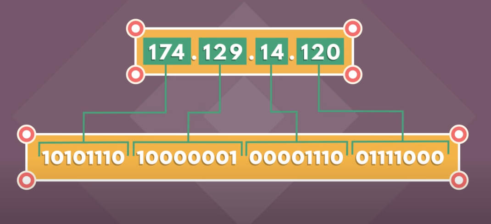

IP Adresses
Published by: Anxhela Mehmetaj
IPV4
This version of ip addresses is called IPV4 which was designed in 1973 and adopted in the 80s. Providing more than 4 billion addresses for devices connecting to the internet. Now is the transition time to a longer address called IPV6 that uses 132 bits per address.
IP Adresses
All the different devices on the internet have unique addresses. An address on the Internet is just a number like the phone number, that's unique to each computer or device.the most important protocols used in internet communication simply called the ip(internet protocols). A computer address is called its ip address. Visiting a website is really just your computer asking the other computer for information. Your computer sends a message to the other computer’s IP address and it also sends along its origin address, so the other pc knows where to send its response. IP addresses are just a bunch of numbers that are organized in hierarchy. These numbers are represented in bits. Traditional ip addresses are 32 bits long with 8 bits for each part of the addresses. The earlier number identifies the country and regional network of the device. And then subnetwork and finally the address of the specific device.
Packets
The way information is transferred from one computer to another is pretty interesting. Information goes from one computer to another in what we call a packet of information and a packet travels from one place to another on the internet a lot like how you might get from one place to another in a car. depending on traffic congestion you may choose a different route to get to the same place. Digital Information can be sent with ip packets but there are some limits.Each packet has the internet address of where it came from and where it's going.
Routers
Routers act like traffic managers to keep the packets moving through the networks. If one route is congested, individuals packets may travel different routes through the Internet and arrive to the destination at slightly different time and out of order. Every router keeps track of multiple paths for sending packets, and it chooses the cheapest available path for each piece of data based on destination ip address for the packet. Network can keep sending packets even if somethings goes wrong. This is the basic for a key principle of the Internet:Reliability.
Reliability
TCP- Transmission Control Protocol TCP manages the sending and receiving of all your data as packets. when the packets arrive, TCP does a full inventory and send back acknowledgements of each packets received. If packets are there, TCP sign for delivery and done. If TCP finds some packets are missing won't sign.